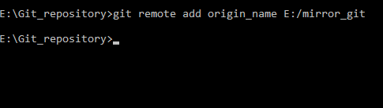

Step three: adding the Mirror as a remote
The final step is to add the Git mirror as a remote to existing git repository linked with GOGS. To do so just run a command with CMD/BASH in the git repository:
git remote add ORIGIN_NAME REPOS.GIT
Where:
- ORIGIN_NAME is the name of remote
- REPOS.GIT is path to the Git mirror

With the help of the Git/SVN mirror the remote now will work as an interface between git and SVN repository letting you pull and push branches back and fourth between them.
Congratulation on finishing creating your Git/SVN mirror.